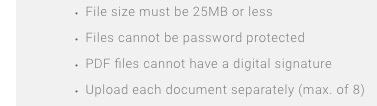

Accessibility is not enough
When a website is not designed to be accessible to users with disabilities, may that be a sign of additional trouble? The case of Vemo Education is an example of that being true.
Today I interacted with the user interface of Vemo Education.
Vemo Education is a company that provides a service to educational institutions. In its own words:
Vemo works with higher education institutions to provide solutions that more effectively use institutional resources by developing and deploying income-based financing programs, which align the cost of a student’s education with its value.
One of Vemo’s clients is Learners Guild, where I recently spent 10 months modernizing my web-development skills. Learners Guild uses an income-based financing program, which it calls an income sharing agreement
(ISA). It paid all the costs of my retraining, and I agreed to pay a fraction of my subsequent income for a period of time after my graduation.
The Guild presumably hired Vemo to administer the ISA on the theory that Vemo is an expert at this and the Guild isn’t. Why reinvent what Vemo has already perfected?
My interactions with Vemo were minimal until after my graduation in February. Then, as expected, Vemo contacted me to get me started with income monitoring so I could pay what I owe.
Today I tried to cooperate with Vemo by following its instructions for the configuration of an account and the reporting of my income. Vemo took me to a URL dedicated to Learners Guild (https://learnersguild.vemo.com) and a page where I could report my income.
That’s where I began to notice that the service being purchased by Learners Guild from Vemo may not be what the Guild is entitled to receive.
Accessibility
First, consider accessibility. Vemo services mainly institutions of higher education, and they generally have commitments and obligations to interact accessibly with their students, regardless of disabilities. There are internationally accepted standards of web accessibility, and one should expect Vemo to adhere to them so that clients can rely on Vemo’s website being just as accessible as the clients’ own websites are.
But Vemo’s page asking me to report my income does not comply with current accessibility standards. For example, keyboard navigation doesn’t make focus changes visible; input form fields don’t have labels; and text has low contrast against its background. The least-contrasting text is what you might expect to be most visible: requirements that the student must comply with. Here’s a picture of such text, medium-dark gray text on a background of medium-light gray.

If you were imposing absolute requirements on the user (must
, cannot
, max.
), would you not make them prominent? WCAG 2.0 Success Criterion 1.4.3 requires the contrast to be at least 4.5:1, but this text has contrast of only 3.15:1. So it’s not only not prominent, but not even standardly legible.
Beyond accessibility
But accessibility is not enough. Even if Vemo were to make this page fully accessible, there would be major work to do.
Vemo uses this page to determine the student’s income, and thereby periodically bill the student for the amounts the student owes. So, the page begins by asking for the amount of the student’s income.
Here is that request:
Your Monthly Income includes all your wages, tips and other income that would be reported on your annual tax return.
That’s it. This is so vague as to border on meaningless. Which return: federal, state, or local? What about income that must be reported but is still nontaxable? What about your spouse’s income reported on a joint return? What about gifts received? How do you report capital gains or annuity income? What about tax-deferred income?
Then, notice that the request is for monthly
income. What if you receive a lump-sum payment? How do you monthlify that? If you receive a promise to pay, do you count that as income once promised, or only after it is received?
Vagueness is not the only big problem here. Contractual inconsistency is another. My ISA with Learners Guild does not tie my obligation to all
my income, but only to my Earned Income
, which it defines conceptually and then by reference to certain lines on IRS Form 1040. And the ISA requires me to report my Earned Income, not all my income. Why, then, does Vemo ask for a far more global collection of incomes, exceeding what it is entitled to ask for under the ISA? If I give Vemo what it asks for (or what I imagine it’s asking for), will I get a bill for the contractual fraction of that larger amount and, if I pay what I’m billed, overpay?
Vemo explains
The one who can answer these questions is, of course, Vemo, so I used its on-site We are online
service to ask about the discrepancies. We had a written discussion lasting about half an hour. Ultimately, Vemo dug out the ISA language, quoted it to me, and told me to report Earned Income per the ISA. I asked why, if so, Vemo is asking all alumni of the Guild to report something vaguer and more global. Vemo’s answer was that they have just condensed the language
. No, I replied, Vemo has misrepresented the ISA and potentially subjected alumni to overbilling. Vemo said that a campus serv representative
would contact me.
Lesson relearned
This incident reminds me of a lesson often taught by experience: Hired experts who do X for you, so you can focus on your real business, sometimes make you spend more time and incur more risk on X than you would have if you had never outsourced X.